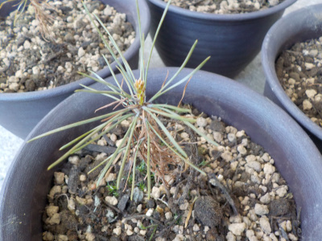
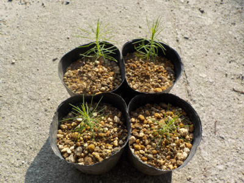
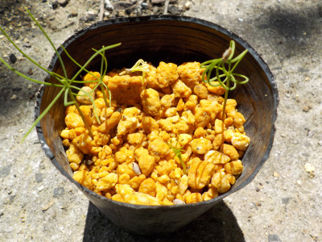
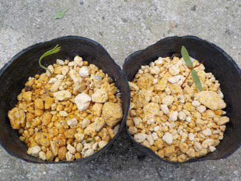
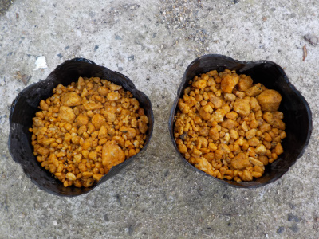
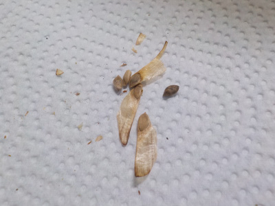
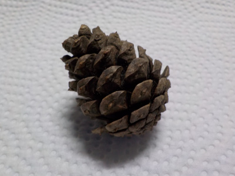

遊びで植物を育てよう
2023/04/09
赤松の緑が復活しました。

春になって緑色の葉っぱが出たようです。枯れてなくて良かった。
ポットから少し大きな鉢に植え替えしました。成長が楽しみです。
【松TOP】
【木TOP】
【園芸TOP】
2022/10/23
赤松の苗が茶色くなりました。

４本全部の赤松の葉っぱが茶色くなりました。
日焼けした？紅葉かな？かれたかな？マツクイムシかな？
松を種から育てるのは初めてなので、なぜだかわかりません。
ネットで検索しましたが、欲しくない情報ばかりが出てきました。情報が多くて探しきれないです。
春になって新芽がが出るかどうかで結果がわかるでしょう。
【松TOP】
【木TOP】
【園芸TOP】
2022/06/19
赤松をポットに植え替えしました。

ちょっと成長したので、1本づつポットに植え替えしました。
幹も葉っぱもひょろひょろです。
【松TOP】
【木TOP】
【園芸TOP】
2022/04/17
松の発芽率って高いですね。

松が次々と発芽しました。小さい時から葉っぱは松葉ですね。
松のところに双葉が生えたものはモミジでした。松の下で採取したので松だと思っていたんですが、よそから飛んで来ていたようです。
【松TOP】
【木TOP】
【園芸TOP】
2022/04/02
松の芽が出ました。

片方は松っぽい葉っぱですが、もう片方は双葉が出ました。
双葉の方は違う種が飛んで来て発芽したのかな？
【松TOP】
【木TOP】
【園芸TOP】
2022/03/06
松のタネをまきました。

1つは赤松で、もう1つは大王松です。
芽が出るかな？
【松TOP】
【木TOP】
【園芸TOP】
2021/10/10
赤松の種です。

鳶ヶ巣城址に大きな赤松が生えているんですが、その赤松の種を持って帰りました。
6粒しかないけど、発芽するかなー。発芽して欲しいなー。
春になったら種蒔きするつもりです。
前回の出雲大社の松は種がなかったようで発芽しませんでした。この赤松の種も松ぼっくりに残っていたのは少なかったので、種を採るなら9月ごろがいいんじゃないかと思いました。
【松TOP】
【木TOP】
【園芸TOP】
2020/01/26
出雲大社で松ぼっくりを拾いました。

もう時期じゃないので、大きい種は見当たりませんでした。
ひょっとしたら小さい種が挟まっているかもしれないので、湿気のあるところで保管してみます。
【松TOP】
【木TOP】
【園芸TOP】
松くい虫の被害にあったら嫌ですね。
【おいしいものを食べよう。】【たくさん寝よう。】
【ソロ活をしよう!】【季節感のあることをしよう。】【動画視聴はほどほどに。】【当サイトの全てのコンテンツは無断転載禁止です。】